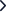

‹
QR 스캔
QR 코드를 스캔해 주세요
QR 코드를
카메라에 비춰주세요
카메라 권한이 필요해요
원활한 스캔을 위해 카메라를 켜주세요
설정
코드로 직접 입력
QR이 잘 보이지 않을 때
입력하기

스캔 시작하기
📷 QR 코드 스캔 중
×
QR 스캔 완료 (자동 감지)
코드로 직접 입력
QR이 잘 보이지 않을 때 식별 코드를 입력해 주세요.
취소
확인 및 스캔
홈
히스토리